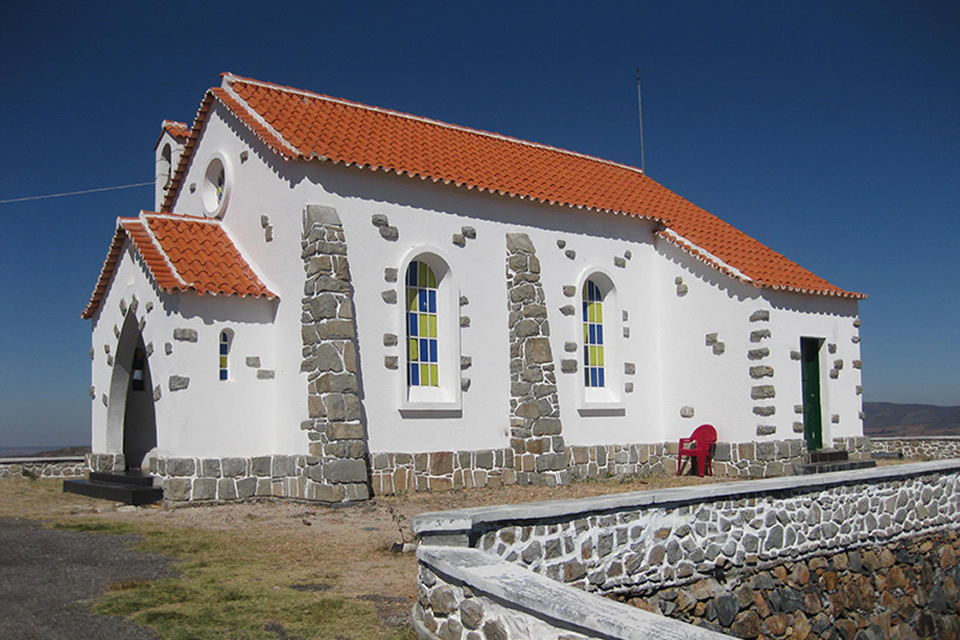
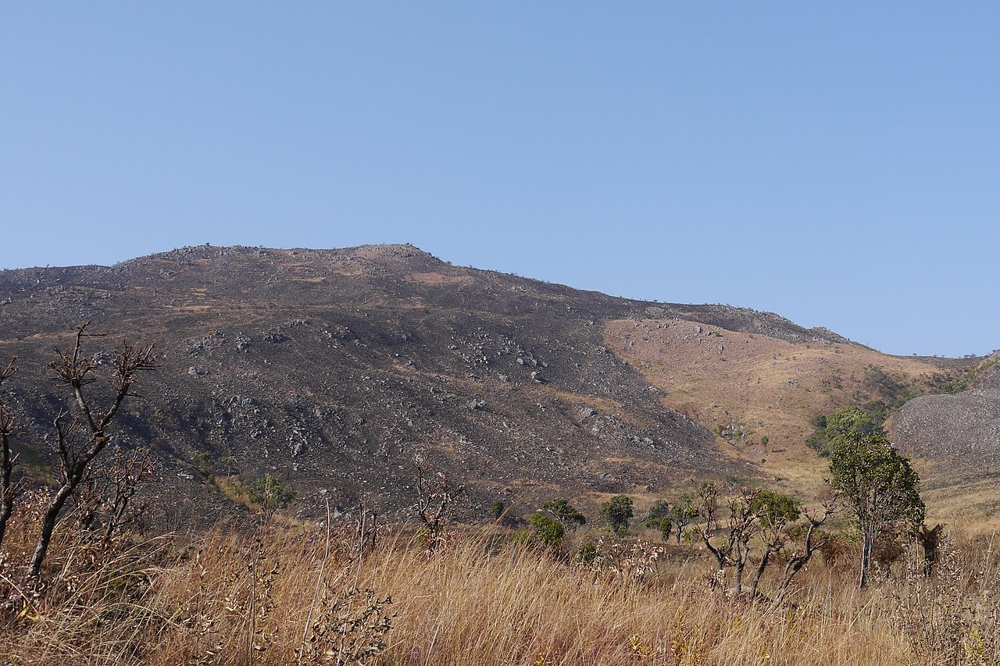
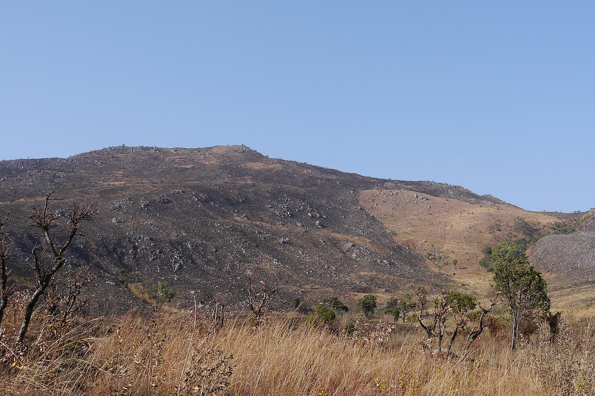
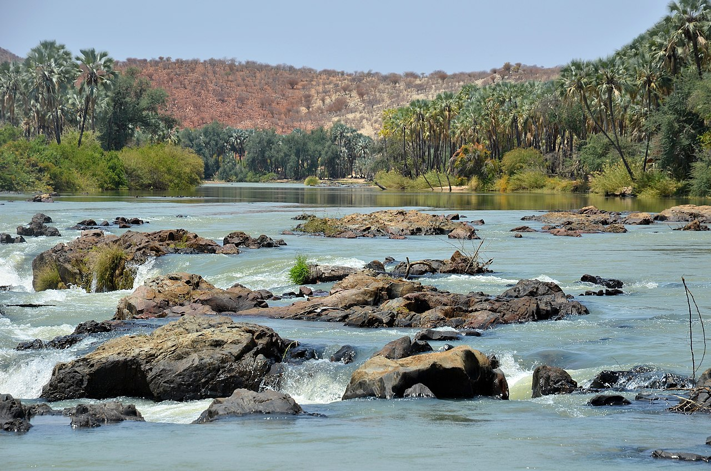
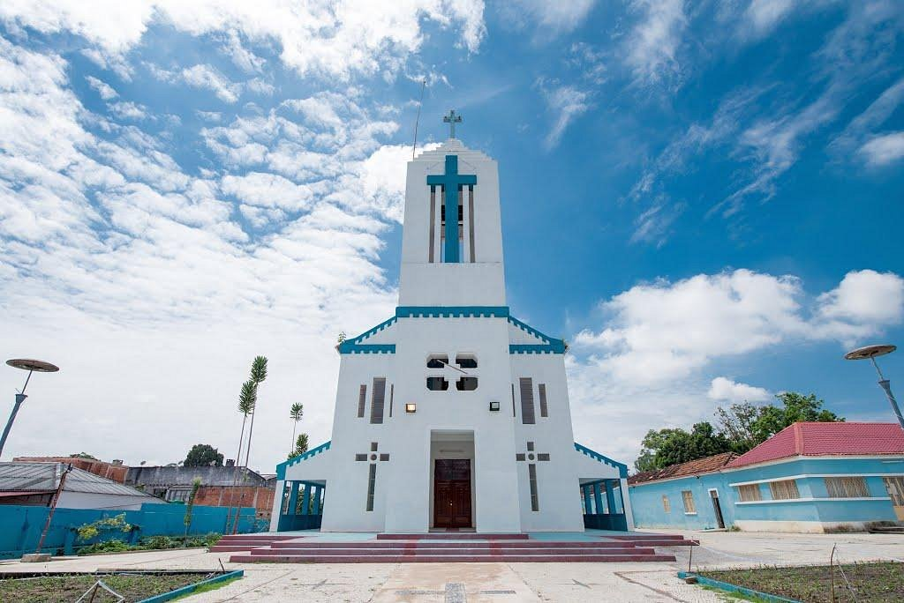
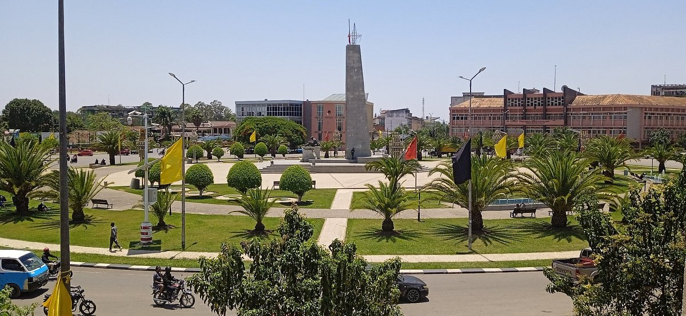
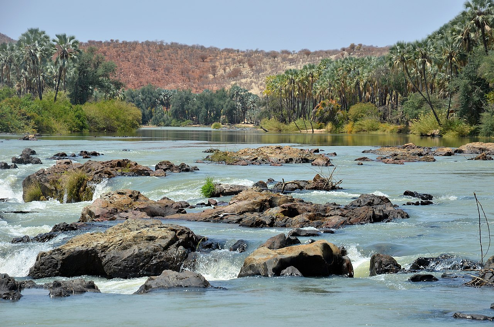
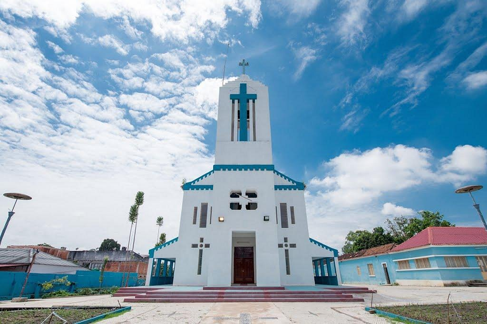
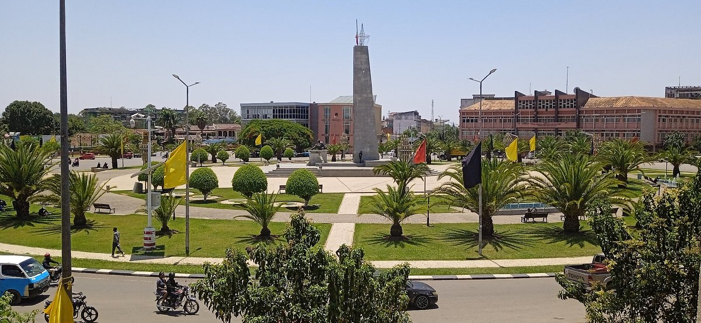

The Sanctuary of Our Lady of Monte da Caála, located on Mount Mbandjela, began to be built in 1927, at the time
Fr. Domingos Vieira Baião, Missionary of the Congregation of the Fathers of the Holy Spirit, who at the time lived
in the Catholic Mission of Cuando. This work is the fulfillment of a Promise made to God by a lay Catholic, who
had health problems. The first weddings of the indigenous people of the region were held in this chapel, while
white people and another part of society with a certain evolution, were married in the Povoação Church, at the Municipal headquarters.
 

 




